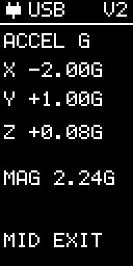
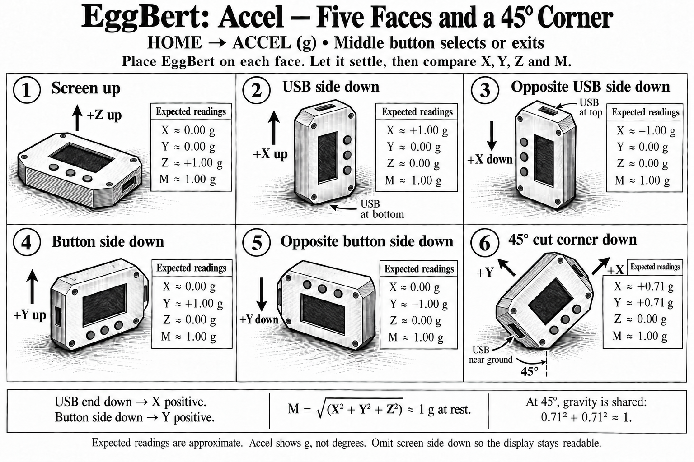

Acceleration
Current controls
Read calibrated live X, Y and Z acceleration in g, plus MAG (vector magnitude). At rest, MAG should be close to 1 g; during freefall it approaches zero.
This live view uses the low-g sensor on both versions. The ±320 g channel is used for version 2 recordings and Gentle Catch.
Middle button: return HOME.

The experiment illustration below shows an earlier screen arrangement. Follow the current controls above.
